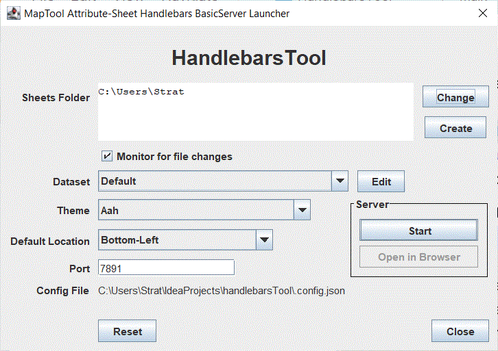
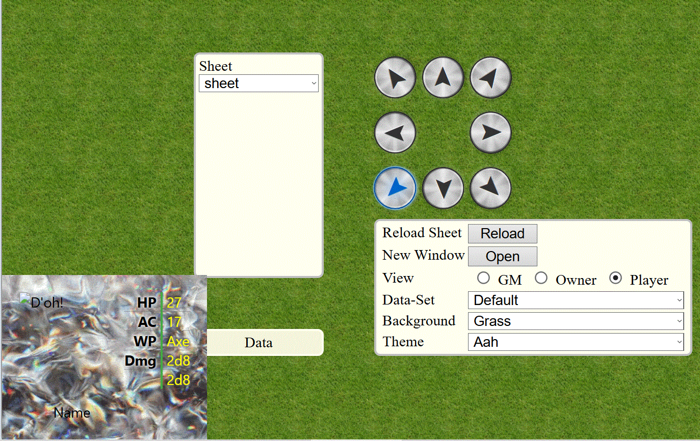

HandlebarsTool
What it is
A tool that runs a local HTTP server for delivering [Handlebars](https://handlebarsjs.com) templated content. Specifically, for delivering Handlebars templates using [MapTool](https://www.rptools.net/toolbox/maptool/) token data to assist in developing attribute sheets and similar content.
Using it
You should be presented with a window like this at launch.

Useful Bits
- Templates Folder
- This is the directory containing templates to be displayed.
- Click the path displayed to open the folder.
- Choose a different folder with the "Change" button.
- Generate a whole new folder structure at your desired location with the "Create" button.
- Monitor for file changes
-
When selected, if it works, any files saved in the folder and subdirectories will cause the template to be refreshed to incorporate any changes.
- Dataset, i.e. mock Token Property Type
-
The default set of data used for generating templates. You will probably set it once and never need it again.
- The "Edit" button
- Used for creating and changing propertyTypes.
- Theme
- Which theme to use when delivering templates at start.
- Default Location
- Where to display the templates at start.
- Port
- Which port the main server will run on.
- Config file
- Displays the path to the ".config.json" file. Click the path to open.
- Reset
- Kill the config file. Return everything to default.
- Start
- Start the server
- Open in Browser
- Opens the main viewing page in your browser.
The Browser View

bored now